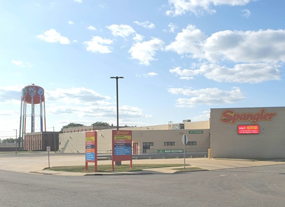
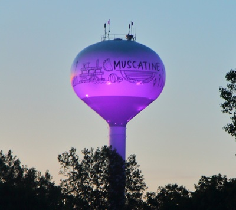

1 / 5

Above is a picture of the DumDums factory water tower in Bryan Ohio. This water tower is used not only by the factory but also by the entire city of Bryan, Ohio.
2 / 5

This is a picture of the Muscatine water tower. It is notable to locals for its changing color at night from LED lights on the ground pointed up at it. Common colors are purple, blue, and green.
3 / 5
Above is a picture of the water tower in Fairfield, Iowa. This picture was taken from their notable historic town square.
4 / 5

This is a picture of the Adair, Iowa water tower. Adair is a small community near Des Moines that is known for its unique water tower pictured above.
5 / 5

This is a picture of the historic water tower for steam trains that is still used to power steam engines at the Midwest Old Threshers Reunion’s Midwest Central Railroad.